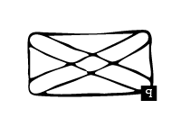
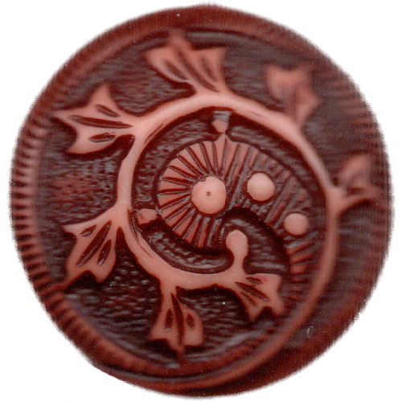

<!DOCTYPE html>
<html lang="kr"></html>
<head>
  <meta charset="UTF-8">
  <meta http-equiv="X-UA-compitable" content="IE-edge">
  <meta name="viewport" content="width=device-width", initial-scale="1.0">
  <title>q</title>
  <link href="q.css" rel="stylesheet">
  <script type="text/javascript">
    document.oncontextmenu = function(){return false;}
    function redirectToRandomPage() { 
            // Array of specific pages on the website 
            const pages = [ 
                'index2.html', 
                'index9.html', 
                'index16.html', 
                'index23.html' 
            ]; 
            // Generate a random index 
            const randomIndex = Math.floor(Math.random() * pages.length); 
            // Redirect to the randomly selected page 
            window.location.href = pages[randomIndex]; 
    }
  </script>
</head>
<body oncontextmenu="return false" onselectstart="return false" ondragstart="return false" onkeydown="return false">
  <div class="box-container">
      <div class="box-item1">
        <div class="map">
          <a onclick="redirectToRandomPage()">
            
          </a>
          <p>경계 위에 놓인 존재</p>
          <div class="comment">
            <p>이분법적인 내용을 묻는 설문지, 정형화된 설문지를 비틀어 사이보그에 관한 설문지를 제작하였다. 이를 통해 사이보그의 의미를 확장하고, 경계에 놓인 사이보그적 존재들을 호명한다.</p>
          </div>
      </div>
    </div>
    <div class="box-item2">
      <div class="container">
        <form action="" method="get">
          <div>
            1. 닉네임 <input class="question" type="text" name="name"><br>
          </div><br>
          <div>
            <p>2. 로봇입니다.<input class="question" type = "radio" name = "robot?" value = "그렇다">그렇다</p>
          </div><br>
          <div>
            <label for="percent"> 당신이 가지고 있는 기억의 몇 퍼센트가 전자기기에 저장되어 있습니까?</label><input class="question" type="number" id="percent" name="percent" min="0" max="100" step="1">
          </div><br>
          <div>
            4. 당신의 신체 중 가장 사이보그화된 부위는 어느 곳입니까?<input class="question" type = "text" name = "cyborg">
          </div><br>
          <div>
            <p>5. 현대의 전쟁은 명령-통제-통신-첩보로 코드화되어있습니다.
            <br>당신은 유전적으로 코드화된 유기체와 코드화된 기계를 통해 태어난 존재입니다.<br>당신에게는 어떤 자아와 명령이 코드화되어 있습니까?
            <br></p><textarea name="code" id="code" cols="30" rows="3"></textarea>
          </div><br>
          <div>
            6. 경계에 놓인 사이보그적 존재 중 하나를 선택해주세요.<select>
            <option value="유색인 여성">유색인 여성</option>
            <option value="개코원숭이의 심장을 이식받은 인간 아기">개코원숭이의 심장을 이식받은 인간 아기</option>
            <option value="샴쌍둥이">샴쌍둥이</option>
            <option value="여성 반핵 평화 단체의 구성원">여성 반핵 평화 단체의 구성원</option>
            <option value="산타리타 감옥에서 나선의 춤을 추는 여성들">산타리타 감옥에서 나선의 춤을 추는 여성들</option>
            <option value="마녀 공학자">마녀 공학자</option>
            <option value="노인">노인</option>
            <option value="변태">변태</option>
            <option value="기독교인">기독교인</option>
            <option value="어머니">어머니</option>
            <option value="레닌주의자">레닌주의자</option>
            <option value="집적회로 속의 여성">집적회로 속의 여성</option>
            <option value="트랜스젠더">트랜스젠더</option>
            <option value="레닌주의자">레닌주의자</option>
            <option value="외국인 노동자">외국인 노동자</option>
            <option value="자매 이방인">자매 이방인</option>
            <option value="본과 미국의 전자제품 회사들에서 일하는 동남아시아 마을 여성들">일본과 미국의 전자제품 회사들에서 일하는 동남아시아 마을 여성들</option>
            <option value="주술사">주술사</option>
            <option value="외계인의 자손">외계인의 자손</option>
            <option value="신체 개조자">신체 개조자</option>
            <option value="켄타우로스">켄타우로스</option>
            <option value="양성구유자">양성구유자</option>
          </select>
          </div><br>
          <div>
            7. 당신은 사이보그로서 무엇을 허물고 싶습니까? <br>
            <input type="checkbox" name="what" value="가부장제" >가부장제
            <input type="checkbox" name="what" value="식민주의" >식민주의
            <input type="checkbox" name="what" value="인본주의" >인본주의
            <input type="checkbox" name="what" value="실증주의" >실증주의
            <input type="checkbox" name="what" value="본질주의" >본질주의
            <input type="checkbox" name="what" value="과학주의" >과학주의
          </div><br>
          <input type="submit" value="제출">
        </form>
      </div>
    </div>
    <div class="box-item3">
      <a href="b2.html">
        </a>
        <span class="text1">b. 키메라<br>퍼레이드</span>
      <a href="d2.html">
        </a>
        <span class="text2">d. 픽션 속<br>사이보그적 여성</span>
      <a href="i2.html">
        </a>
        <span class="text3">i. 집적회로<br>속의 여성들</span>
      <a href="n2.html">
        </a>
        <span class="text4">n. 역사 속<br>사이보그적 여성</span>
    </div>
  </div>
</body>